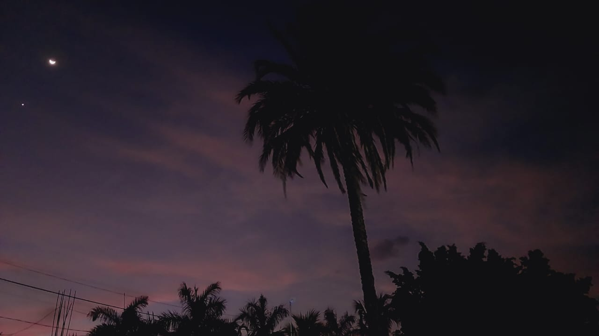

El fútbol se juega en un terreno de césped natural o artificial de forma rectangular. Las medidas permitidas del terreno son de 90 a 120 metros de largo y de 45 a 90 metros de ancho, pero para partidos internacionales se recomiendan las siguientes medidas: entre 100 y 110 metros de largo, y entre 64 y 75 metros de ancho. Las dos líneas ubicadas a lo largo del terreno reciben el nombre de líneas laterales o de banda, mientras que las otras son llamadas líneas de meta o finales. Los puntos medios de cada línea de banda son unidos por otra línea, la línea media. Sobre el centro de cada línea de meta y adentrándose en el terreno, se ubican las áreas penales, las áreas de meta y las metas o porterías. Las llamadas metas, también conocidas como porterías o arcos, constan de dos postes verticales (conocidos como palos o verticales) de 2,44 metros de alto ubicados a 7,32 metros de separación y sobre el centro de cada línea de meta. Las partes superiores de los postes son unidas por otro poste horizontal, conocido como travesaño o larguero. Las áreas penales son áreas rectangulares ubicadas en el centro de las metas y adentrándose en el terreno. Estas se trazan a 16,5 metros de los postes verticales, adentrándose también 16,5 metros hacia el interior del terreno, y luego uniéndose por otra línea mayor. El trazado del área de meta es igual, pero utilizando una medida de 5,5 metros.
Cada uno de los dos equipos consta de un máximo de 11 jugadores y un mínimo de 7. Durante el partido se podrán cambiar a estos jugadores por otros, los denominados suplentes o sustitutos. Uno de los jugadores titulares deberá ser el guardameta. Está permitido que un guardameta y otro jugador del equipo se intercambien de posición durante el encuentro, siempre y cuando sea durante una interrupción con el consentimiento del árbitro. Cada jugador deberá tener una indumentaria básica, la cual consta de una camiseta o jersey con mangas, unos pantalones cortos, medias, canilleras o espinilleras y un calzado adecuado. Los colores de la indumentaria de ambos equipos y la de ambos guardametas deben ser claramente diferenciables para la vista. Los capitanes (jugadores representantes de cada equipo) deberán llevar alguna marca identificadora para ser llamados por el árbitro cuando sea necesario, que generalmente es un brazalete. El fútbol se juega con un balón o pelota de forma esférica. Deberá ser de cuero u otro material adecuado. Su circunferencia será de entre 68 y 70 centímetros, su masa de entre 410 y 450 gramos y su presión de entre 0,6 y 1,1 atmósferas al nivel del mar. Los jugadores pueden tocar y mover el balón con cualquier parte de su cuerpo excepto los brazos. El guardameta tiene la ventaja de poder utilizar cualquier parte de su cuerpo para esto, pero solo dentro de su área penal.